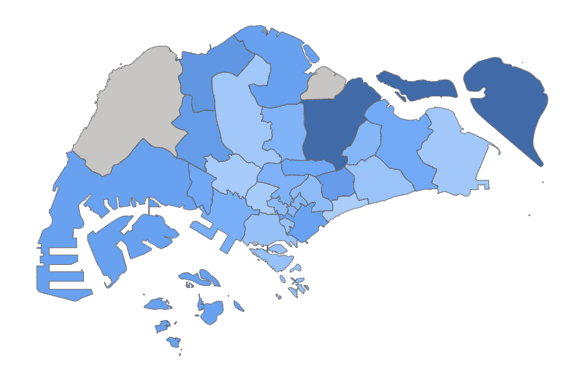
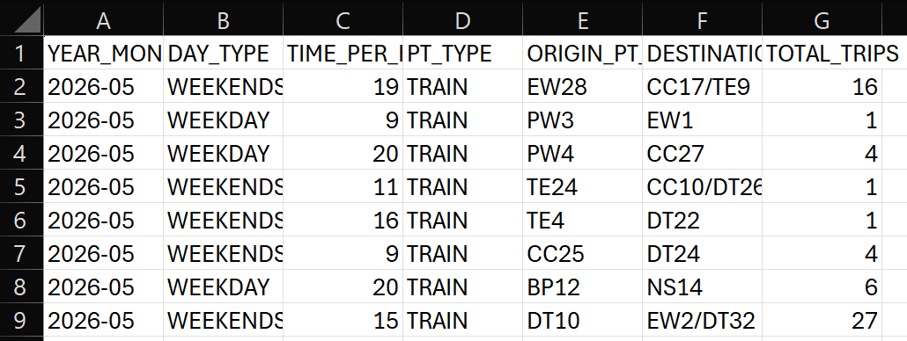
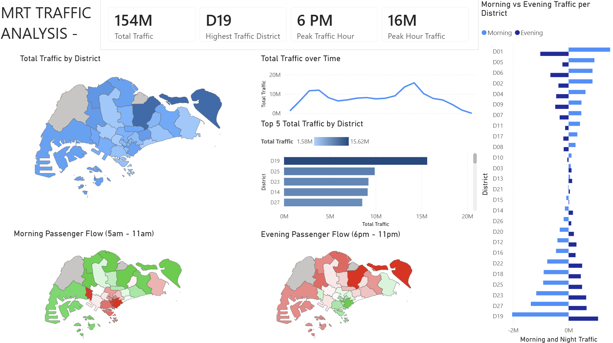
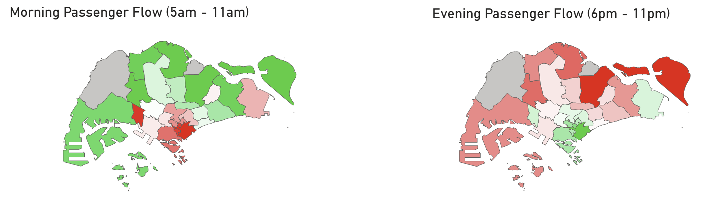
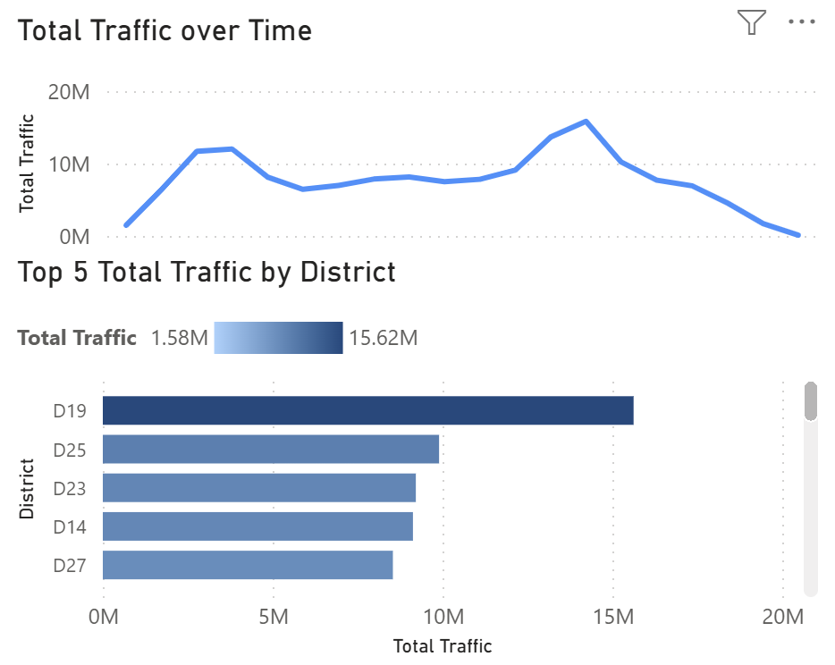
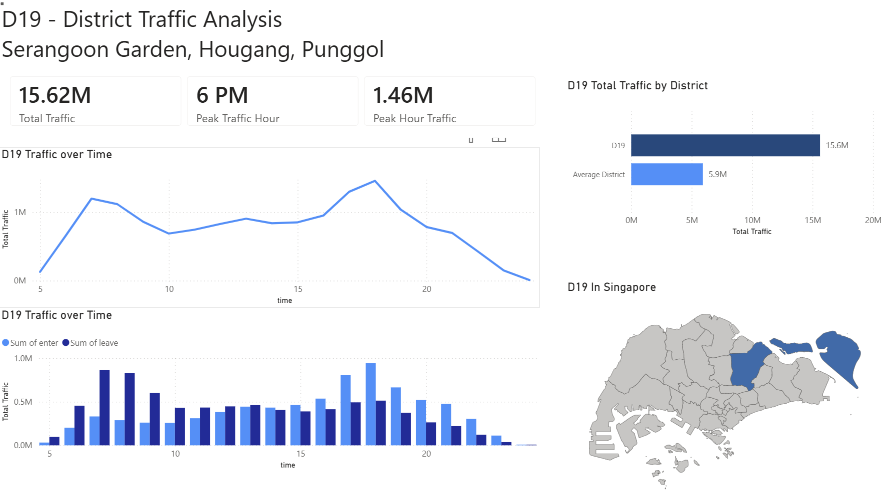
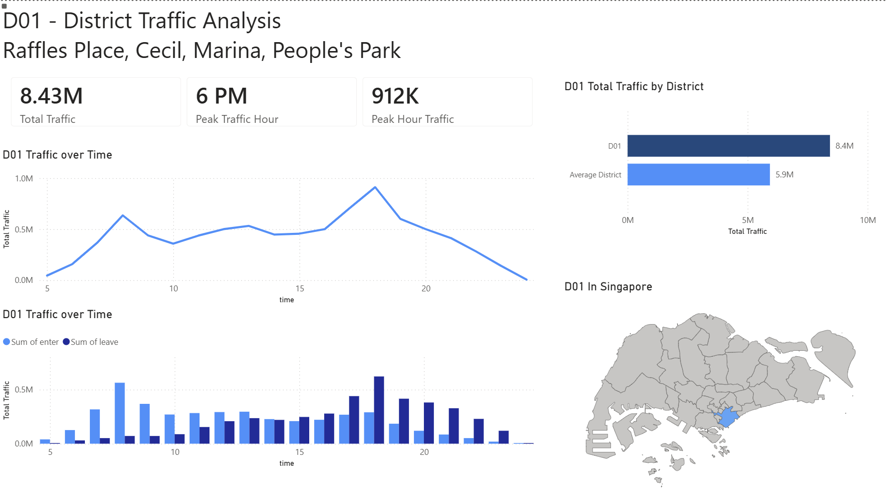
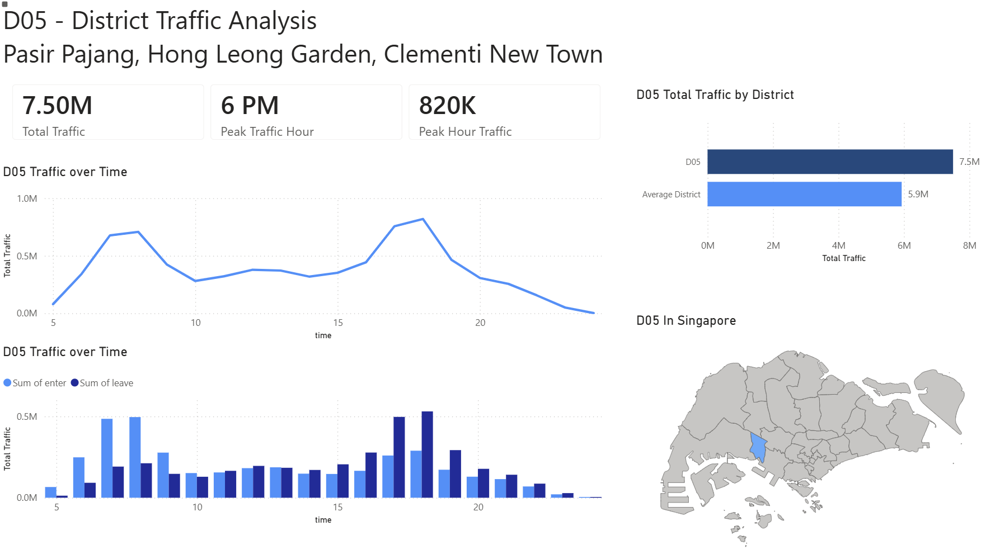
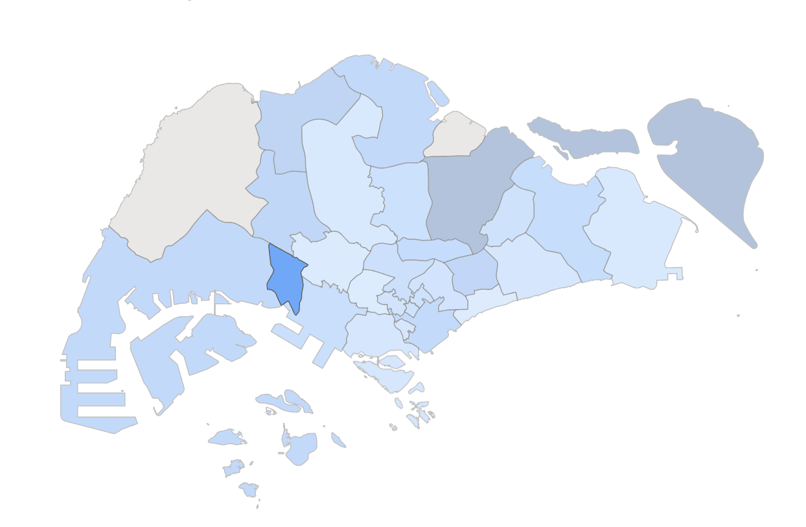

DPV MRT Analysis

Analysis into Singapore MRT traffic.
Utilising MRT traffic over a month to determine the best locations for F&B businesses.
The Objective
Given Singapore is a complex and competitive market, where are the best locations to start up a new F&B business?
The Problem
Data is limited, where utilising MRT is not the most accurate form of data analysis and precision.
The Solution
Using the traffic flow of the MRT, as well as total footfall. To make a general estimation for probable locations that would function better for a new F&B business.
Data

I had to filter the dataset based on Traffic Enter and Exit to mapping regions by UAE District number.
PreProcessing
Lim Chu Kang and Seletar are removed due to no MRT traffic to those locations, and each MRT station has the total footfall mapped out.
Analysis

Using total traffic and traffic flow to determine the probable best locations to start a new F&B business.
Insights


Firstly, in the morning, traffic flows from the outskirts towards the city centre, likely due to people going to work. The opposite happens in the evening where people move out of the city centre towards the outskirts, likely going home.
Secondly, D19 (Serangoon Gardens, Hougang, Punggol) has by far the highest traffic with a total of 15.62 million commuters a month.
Results Achieved
D19 (Serangoon Gardens, Hougang, Punggol)

D19 has the highest footfall with 15.62 Million passengers per month on average. The traffic flow suggests that people leave D19 in the morning and return to D19 in the evening, allowing F&B businesses that target the evening rush, such as dinner-oriented or heavy meal oriented F&B businesses to be able to target people that come back in the evening.
D01 (Serangoon Gardens, Hougang, Punggol)

D01 has a very high morning traffic around 8am, likely due to people coming in for work. As it is located near the central business district, it suggests that a large number of the people who enter this district in the morning are people coming in for work. Hence it will benefit businesses who target morning commuters such as breakfast orientated F&B businesses or light meals and drinks.
D05 (Serangoon Gardens, Hougang, Punggol)

D05 also has a very high morning traffic like D01, but unlike D01, D05 also has a decent surge in entries near the evening around 6pm with 820K traffic inwards. This suggests that D05 also has good residential or evening related activities while still having a high morning commute likely due to work. Hence D05 would be a good location for businesses targeting both morning and evening related F&B businesses. Such as meal oriented or drinks based F&B business.
Conclusion

D05 is the general recommendation because it supports both morning and evening traffic, D01 benefits breakfast-orientated F&B business while D19 focuses on dinner orientated with high total footfall.
{
"what_worked" : [
"",
"",
"",
""
],
"what_did_not_work" : [
"",
"No handling of connection lost in BLE"
],
"knowledge_learnt" : [
"Neural Networks",
"Data Pipelines",
"Software Architecture"
]
}
Let's go back
< Back